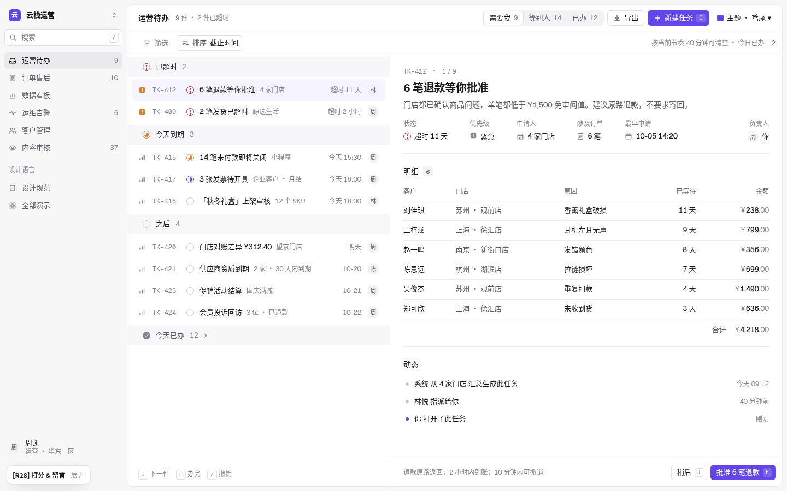
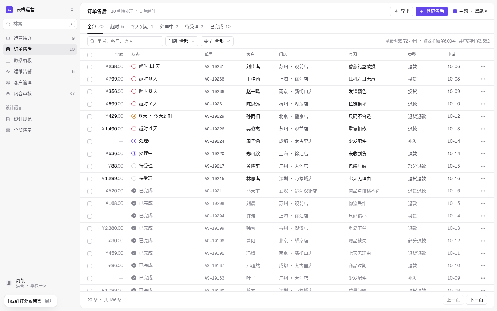
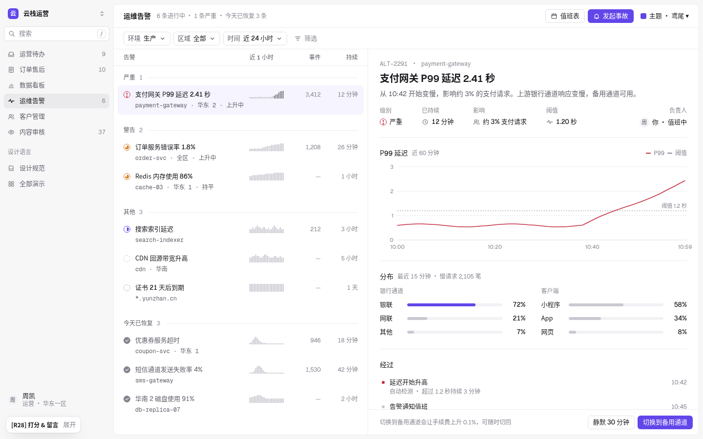
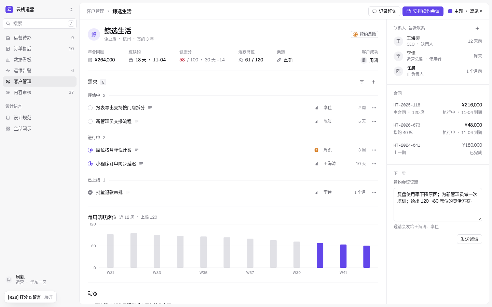
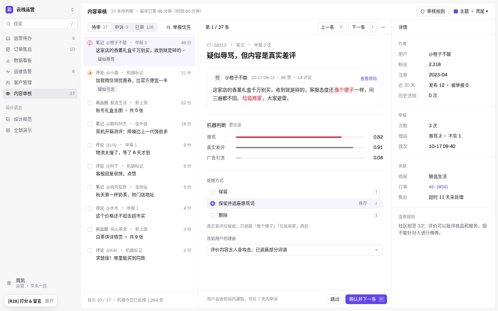
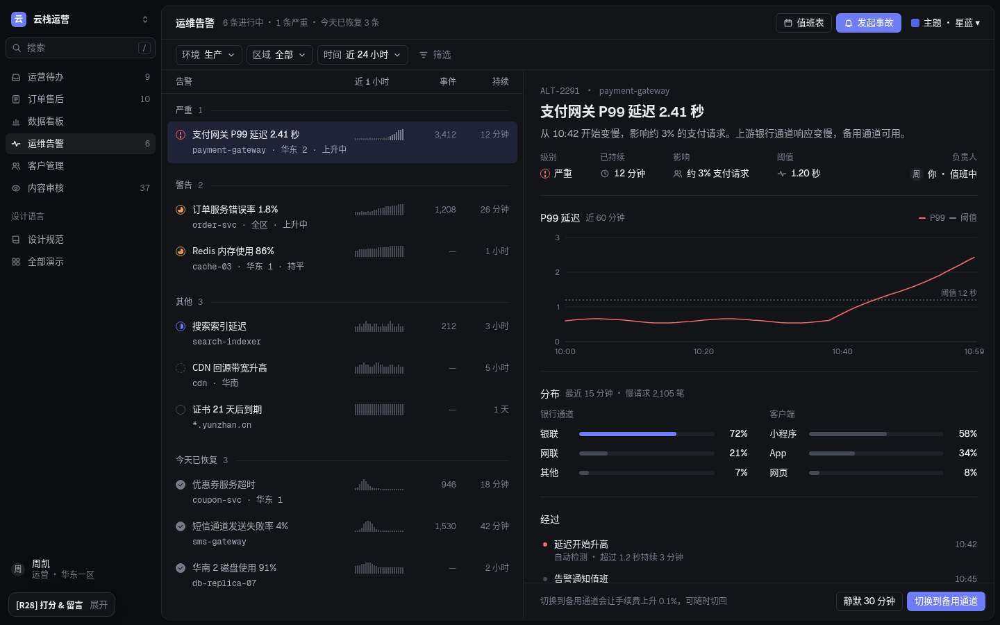

先临摹，再设计。
R27「素净」得 55 分，批注「多参考下案例再做，不要急着交差」。这是第二次被说「急」（R21 也是）。R28 先收集 43 张已上线产品的真实截图、把其中 6 张逐像素复刻成 HTML 并和截图做差（每个演示类型至少一张），量出它们的字号、灰阶、行高、线色和间距，再用这些数字重写唯一一份 app.css，六个演示各对应案例库里的一个具体产品模式，最后逐页和参考并排复核：初版 4 轮，深化阶段每页再 3–5 轮，收尾做了模糊测试、噪音计数和深色检查。

案例库结论
案例库共 43 张（私有，不随站点发布）：Linear 6、Stripe 2、Vercel 3、Attio 3、Plain 2、Intercom、Front、Groove、Kitemaker、Cardinal、Spendesk、Flow、Laserfocus、Sentry 4、PostHog 2、Compound、June、GitHub 3、Notion、飞书 4，以及 Ant Design Pro、Jira 作为反例。阿里云控制台、Datadog、Shopify 后台的帮助页取不到真实界面截图，Mobbin 需要登录，X 上搜到的多为概念稿，均未采用。每张都记录了来源、模式、为什么干净、实测令牌（底色、线色、文字灰阶、字形高、行距）。
六张逐像素复刻
分两批：先 3 张，深化阶段再给剩下三类演示（告警、审核、看板）各补 1 张。每张都挑最接近我们演示类型的参考，测量后写成 HTML，用无头浏览器按参考图的像素密度渲染，和原图叠出热力图，反复改到文字框位置误差 ≤1–2px。第一次复刻 Linear 时把原图当成 2 倍图，所有字都大了 13%——之后统一先用一个已知字号（属性值 13px）反推缩放比，再测其他尺寸。
| 复刻 | 换算 | 平均差异（首版 → 终版） | 量到的关键数字 |
|---|---|---|---|
| Linear 客户页（运营待办 / 客户管理） | 1152×477 @2.5x | 5.45 → 3.02 | 名称 17/500；属性标签 12 #5B5B5B、值 13/500、列间 40；0.5px 线 #D4D4D4；分组标签→首行 34、组间 54；行 40；计数徽 11px、底 #EAEAEC、圆角 4 |
| Stripe 发票列表 + 行菜单（订单售后） | 1029×688 @1.4x | 11.94 → 7.81 | 行 36、只有横线 #E3E8EE；列头 11px 大写；金额右对齐加粗、币种灰；发票号等宽；状态徽 12/500、高 18；菜单 156 宽、项距 27、分组小标题 11px |
| Attio 人员表（客户管理） | 1440×900 @2x | 8.94 → 8.58 | 侧栏 275、#FBFBFB + 1px #E7E7E7；顶栏 48、工具栏 57；按钮 33 高、1px #EAEAEA、圆角 8；行 36；正文 14/500 #111、列头 #5E5E5E；记录名 20px 浅蓝胶囊；AI 字段格底 #F9F7FE（≤2% 的语义底色） |
| Sentry 问题流（运维告警） | 1333×720 @1.2x，Rubik | 7.26 → 7.20 | 表头 36、底 #F7F6F9、只有表头有列间竖线；行 79 三层（标题 14/600、黑色信息行、10.8 灰元信息）；趋势是 26 根灰柱，柱子不上色，严重度只用图标和 2.5px 竖条 |
| Plain 工单三栏（内容审核） | 1440×900 @2x，Inter 替代 | 10.31 → 8.86 | 三块白面板、圆角 8、栏缝 8；左栏条目三层且无分隔线、选中只是 #F8F8FA；消息是带边框的白卡；右栏按主题分块，每个操作都标快捷键 |
| Vercel Observability（数据看板） | 800×419 @3x，Geist；曲线逐列描出 | 5.33 → 5.26 | Y 轴只有 3 个刻度、从 0 起、0 线略深 #E0E0E0；曲线 1.1px + 极浅同色面积，无点无渐变；表格数值列用行内灰条表示占比 |
剩余差异主要来自替代字体（Stripe 用 SF Pro、Plain 用自有字体，复刻用 Inter）、图标形状和截图压缩；文字框位置已逐个对齐。复刻文件和叠图只保存在本地研究目录，不随站点发布。
r20–r27 缺了什么
- 页面骨架错了：每页都是「28px 大标题 + 说明句 + 4 张指标卡 + 两张浮动卡」。参考里只有看板这样做；队列、订单、客户、审核都是「48px 顶栏 + 工具栏 + 铺满的列表 / 表格 + 详情」。
- 灰缝 + 卡片：区域之间用 24px 灰缝和圆角卡片分开，每屏 3–6 个框；参考用一块白面板 + 1px 线。
- 两行条目：队列每项三行（标题、副标题、日期），高约 50；参考单行 36–40。
- 字偏大、档位多：正文 14/22、标题 28、指标 24；参考正文 13–14、标签 12、顶栏标题 14–15。
- 状态染色：「超时 11 天」「疑似辱骂」整段彩色；参考只给图标上色。
- 分组不明显：组头是灰色小字、无线、组间距≈行距；参考是标签 + 计数 + 线，组间距 1.6 倍。
- 侧栏和主区没有边界：同为灰底；参考侧栏深 1–2% + 一条发丝线（或外框 + 白面板）。
- 属性被拉散：详情属性三等分；参考固定列间 40px。
演示 ↔ 参考
每个演示对应案例库里一个具体的已上线模式（下表为文字说明；缩略图全部是 R28 自己的渲染）。
| 演示 | 参考模式 | 借鉴了什么 |
|---|---|---|
| 运营待办 | Linear「我的事项」分组列表 + Linear 客户页属性行 | 左侧按紧急程度分组（色带 + 状态图标 + 计数）的 40px 单行列表，带优先级和等宽编号；右侧详情：标题、属性行、真实清单表、动态；底部「今天已办」可折叠。J / E / Z 流转。 |
| 订单售后 | Stripe 发票列表 | 金额在第一列、右对齐；状态 = 14px 图标 + 黑字；单号等宽；表格只有横线；每行「···」打开分组操作菜单；勾选后工具栏换成批量操作条；20 行 + 分页，点行打开详情抽屉。 |
| 数据看板 | Compound 资产看板 + Vercel 可观测 | 统计条用竖线分 4 格（不用 4 张卡）；每小时 GMV（7 × 24 点、3 个刻度、从 0 起）与区域贡献并排；排行表用行内灰条表示占比；只有越线的退款率是红色。 |
| 运维告警 | Sentry 问题流 + Sentry 告警详情 | 两行条目（标题 + 等宽服务名 + 趋势词）、24 根灰色迷你柱（不上色）、事件数与持续时间右对齐；「今天已恢复」退为灰色；详情里属性行、P99 曲线、分布和经过。 |
| 客户管理 | Linear 客户页 + Attio / Intercom 属性栏 | 头像 + 名称 + 属性行；需求按状态分组（标签 + 计数 + 发丝线）；右侧 300px 属性栏放联系人、合同和下一步。 |
| 内容审核 | Intercom 收件箱三栏 + Plain 工单详情 | 队列 / 内容 / 详情三栏：条目三层、选中项是内缩的圆角浅底；中间给结论式标题、内容卡、机器判断和带 1 / 2 / 3 快捷键的处理方式；右栏是作者、举报、关联、规则；10 条各有独立详情。 |





令牌
全部来自复刻测得的数字，取整到 4 的倍数附近，并照顾中文字形（Noto / 苹方在 13px 仍清楚）。
| 尺寸 | 值 | 来源 |
|---|---|---|
| 顶栏 / 工具栏 | 48 / 44 | Attio 48 / 57，Linear 44 |
| 列表行 / 表格行 | 40 / 36 | Linear 40；Stripe、Attio 36 |
| 侧栏项 | 30，间距 2，圆角 6 | Attio 30 + 2 |
| 控件 | 28（工具栏）/ 32（表单），圆角 6 | Linear 28；Stripe 28 |
| 面板 | 圆角 10，外边距 8，1px 线 | Linear / Plain 内嵌面板 |
| 属性行 | 标签与值间 6，列间 40 | Linear 8 / 40 |
| 分组 | 组头 32，组前 16，线 1px | Linear 34 / 54 |
| 状态图标 | 14px | Linear 14 |
规则 R1–R13
左边用本轮组件渲染，右边是 r20–r27 里真实出现过的写法。
R1 · 一块白面板，区域之间用线
依据：Linear、Attio、Plain、Stripe 的工作区都是一整块白（或嵌在浅灰外框里的一整块白）；「灰画布 + 白卡片」只出现在看板类产品里。r20–r27 每页 3–6 张卡，是「不干净」的主要来源。
R2 · 单行 40px，副信息进右侧固定列
依据：实测 Linear 行 40px、Attio / Stripe 36px，全部单行；Plain 的两行条目只用于「客户名 + 邮箱」这种成对信息。
R3 · 列表用色带分组，记录页用标签 + 线
依据：Linear「我的事项」组头是贯穿色带；Linear 客户页内实测标签到首行 34px、组间 54px（≈ 1.6 倍）。
R4 · 状态颜色只给 14px 图标
依据：Linear 用 14px 状态圆（空心 / 半满 / 实心勾），Attio 用 7px 色点，文字都不染色。
R5 · 记录页用属性行，不用指标卡
依据：Linear 客户页实测：标签 12px #5B5B5B、值 13px/500、标签与值间 8px、列间 40px。
R6 · 表格只有横线，数字右对齐，编号等宽
| 金额 | 状态 | 单号 |
|---|---|---|
| 超时 11 天 | AS-10241 | |
| 处理中 | AS-10226 |
| 金额 | 状态 | 单号 |
|---|---|---|
| ¥238.00 | 超时 | AS-10241 |
依据：Stripe 发票实测：行 36px、只有横线 #E3E8EE、金额右对齐加粗、发票号等宽。
R7 · 控件全平：28px、1px 描边、无投影
依据：Attio 工具栏按钮实测 33px、1px #EAEAEA、圆角 8；Linear 控件 28px。
R8 · 看板指标用统计条，不用 KPI 卡
依据：Vercel / Stripe 首页的指标是一条分格横带；Compound 的数字是 22px/500，不加粗。
R9 · 详情里的分隔线收进内容边距
依据：Linear 客户页：属性行下的分隔线与内容同宽，不碰窗口边缘。
R10 · 完成即退场：灰勾 + 次要色
依据：Linear 已完成事项与 Sentry 已解决问题都退为灰色；Plain 的 Done 只是图标变化。
R11 · 图表从 0 起，3 个刻度，数据要密
依据：Vercel Observability：3 个刻度、0 线 #E0E0E0、极浅同色面积；Sentry 趋势柱不上色。
R12 · 高频操作旁边写出快捷键
依据：Plain 右栏每个块和底部操作都标了快捷键（P、A、L、N、Z、E）；Linear 列表 J / K。
R13 · 选中谁，详情就是谁
依据：R28 深化复核：内容审核 10 条、运营待办 9 条、订单 20 行都有独立详情 / 抽屉。
组件
| 无线降噪耳机 Pro |
主题
右上角的主题切换器保留全部主题：鸢尾（默认）、钴蓝、湖蓝、石墨、晴窗、珊瑚和深色「星蓝」（midnight）。深色下外框 #0B0C0F、面板 #131418、线 #22242A，结构与浅色完全一致。

复核记录
每轮把演示和参考截图按同样尺寸并排（全图 + 2 倍局部），逐项列差距（间距、字、密度、图标、数据真实性、空白、对齐、图表收尾）再改。并排图含第三方截图，只留在本地研究目录；这里只写结论。
初版 · 四轮
| 轮次 | 发现 | 改动 |
|---|---|---|
| 第 1 轮 | 订单表 5 个红色实心状态图标连成一列，比 Stripe 的淡色徽标重得多；工具栏右侧说明贴在按钮后面；批量条在未选中时也显示。 | 超时图标改成红色空心圈 + 叹号；所有「超时 N 天」文字恢复黑色；表头改用次要灰（Stripe 表头比我们深）；修复 [hidden] 与右对齐。 |
| 第 2 轮 | Intercom / Plain 的选中项是内缩的圆角浅底，我们是贯穿整行的色带；Linear 详情的分隔线收在内容边距里，我们贯穿面板；周席位柱太粗太深；告警列表的数字没有列名。 | 列表行改为内缩 8px、圆角 6；详情面板的节线收进 24px 边距；柱宽收窄、非重点柱改浅；告警列表加 34px 列头（近 1 小时 / 事件 / 持续）；小节标题 600 → 500。 |
| 第 3 轮 | Compound 的大数字是 22px/500，我们 24/600 显得笨重；看板两栏下方没有收口线；原生下拉箭头；时间线首条文字被染红；1280 宽检查无溢出。 | 统计数字改 500；两栏加底线；下拉换成平的自绘箭头；时间线只给圆点上色；1280 / 1440 两档都无横向滚动。 |
| 第 4 轮 | 内容审核对照 Intercom 收件箱：三栏的栏头不在一条线上（队列有页签行，中栏和右栏直接开始内容），栏与栏之间的分组不够明显；「跳过」和「下一条」都占用 J 键。 | 中栏加「第 1 / 37 条 · 上一条 K / 下一条 J · 更多」栏头，右栏加「详情」栏头，三栏头同高 44 并共用一条线；「跳过」去掉快捷键；订单表对照 Stripe 复查无新差距。 |
深化 · 每页 3–5 轮
| 演示 · 对照 | 轮数 | 主要差距 | 改动 |
|---|---|---|---|
| 运维告警 · Sentry 问题流 | 3 | 迷你柱只有 6 根且按严重度染色；没有已恢复的告警，看不出一天的全貌；详情缺「影响面」；深色下已恢复的勾比进行中的还亮。 | 24 根灰柱、颜色只留在状态图标；条目第二行加「上升中 / 持平」；新增「今天已恢复」组（灰勾 + 次要色）；详情加「分布」（银行通道 / 客户端）；静音、改派的 Toast 可真撤销。 |
| 数据看板 · Vercel Observability | 3 | GMV 只有 7 个点、Y 轴 5 刻度且不从 0 起；排行 5 行，下方空；迷你柱与数字重复；星期标错；深色下上周线看不见。 | 每小时 GMV（7 × 24 点，真实日内形状），0 / 15 / 30 三刻度；排行 8 行 + 「占 GMV」行内灰条；上周线独立令牌 --chart-prev；日期范围切换会改统计条。 |
| 内容审核 · Plain / Intercom（上轮评分页，多 2 轮） | 5 | 条目只有标题一层；帖子没有边界；处理方式没有快捷键；10 个描边标签 = 10 个框；切换条目时内容不变；低置信度也是红条。 | 条目三层（类型 · 作者 · 举报 + 时长 / 摘要 / 只在有风险时出现的中性标签）；帖子进 1px 内容卡；1 / 2 / 3 选处理方式、J / K / Enter 流转；10 条各有完整详情、作者、举报、关联、规则；红色只给 ≥ 0.50 的风险项；已处理变淡可撤销。 |
| 运营待办 · Linear 我的事项（多 1 轮） | 4 | 分组只是灰字 + 细线，扫一眼分不出组；缺优先级与编号；只有 1 条有明细，其余详情空半屏；列表下方空。 | 36px 分组色带 + 状态图标；优先级信号格 + 等宽编号；5 类任务各有真实清单表；底部可折叠「今天已办」，办完的任务进入、撤销移出；列表宽 480 防截断。 |
| 订单售后 · Stripe / Spendesk | 3 | 只有 11 行、无分页、点行无反应；已完成全是紫勾。 | 20 行 + 「共 186 条」分页；点行开 400px 详情抽屉（Esc 关闭，可直接批准 / 驳回）；完成态改灰勾。 |
| 客户管理 · Linear 客户页 / Attio | 3 | 联系人的彩色圈没有图例；合同金额不对齐；顶栏和右栏两个主按钮做同一件事；完成态有两种勾。 | 联系人改「最近联系 12 天前」；合同两行条目（等宽编号 / 右对齐金额 + 到期）；右栏降为次按钮；全站完成态统一灰勾。 |
收尾 · 新眼睛检查
模糊测试：六页首屏高斯模糊后，每页只剩一个焦点（选中项、GMV 曲线、P99 曲线、风险条、表格、席位柱），没有跳出来的色块；据此去掉了告警迷你柱下的深色基线（模糊后是 9 条横杠）和「筛选」虚线框，改短一条被截断的副标题，审核标签 11.5px 归到 12px。
噪音计数（r27 → r28，首屏）：字号 4–7 档、字重 3 档、文字样式 8–13 种、截断 0，与 r27 持平或更少；线色比 r27 更浅（#ECECEF）。如实记录：订单 / 告警 / 审核三页的可见线条从 43 / 28 / 33 增到 57 / 36 / 43，运营待办的带色面积从 3.5% 到 7.5%——前者是首屏行数翻倍（订单 9 → 20 行）和新增的已恢复组、内容卡，后者是 5 条分组色带。这是对「信息太少、太空」的有意交换：信息变多，样式种类不增加。
深色「星蓝」：六页逐一检查，灰勾、色带（白 3%）、上周虚线、抽屉投影、内容卡边框都有层次，没有浅色专用的硬编码颜色。
验收清单
- 一块白面板，不出现浮动卡片；区域之间只有 1px 线。
- 列表行 40、表格行 36，单行；副信息在右侧固定列。
- 分组 = 标签 + 计数 + 线，组间距大于组内距。
- 状态颜色只在 14px 图标上；红色只给越线的数字和危险操作。
- 记录属性用属性行；看板指标用统计条。
- 字号只用 12 / 13 / 14 / 20 / 24，字重 400 / 500 / 600；无衬线。
- 控件平：无渐变、无投影；投影只给浮层。
- 长列表分组用色带；完成态是灰勾 + 次要色。
- 图表从 0 起、3 个刻度、真实粒度；严重度不靠给图表染色。
- 队列的每个流转操作都有快捷键；点哪条，详情就是哪条。
- 深色主题结构一致；1280 宽无横向滚动。